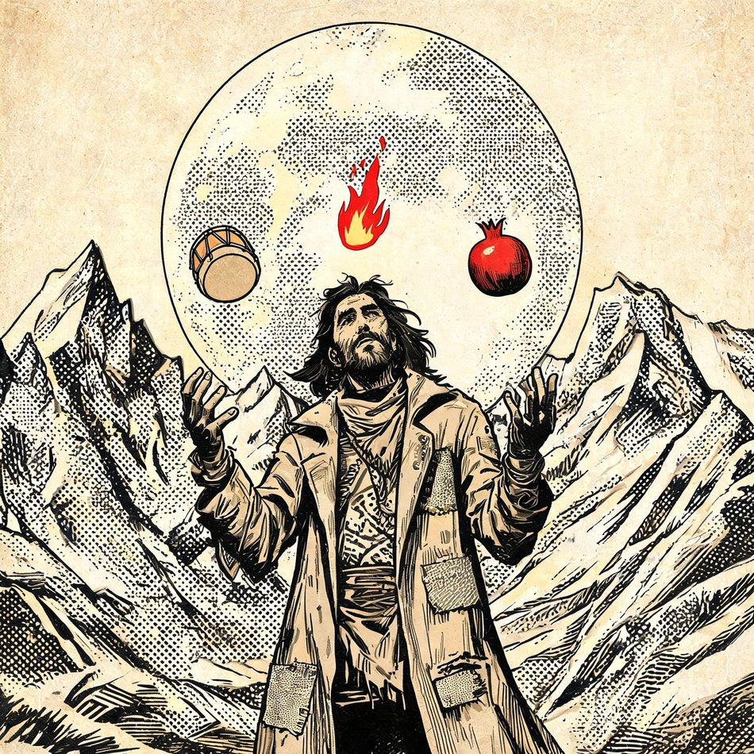
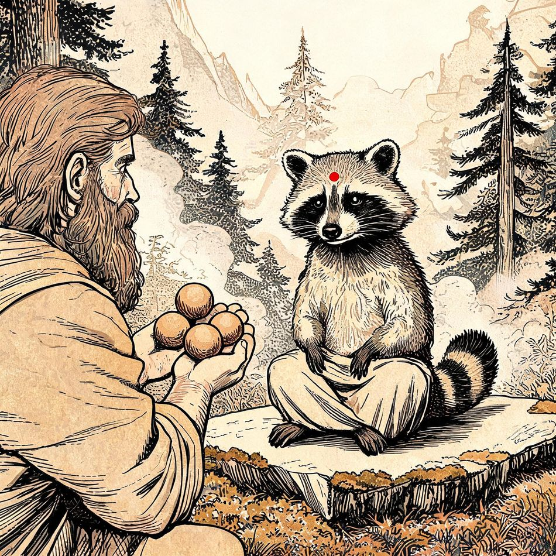
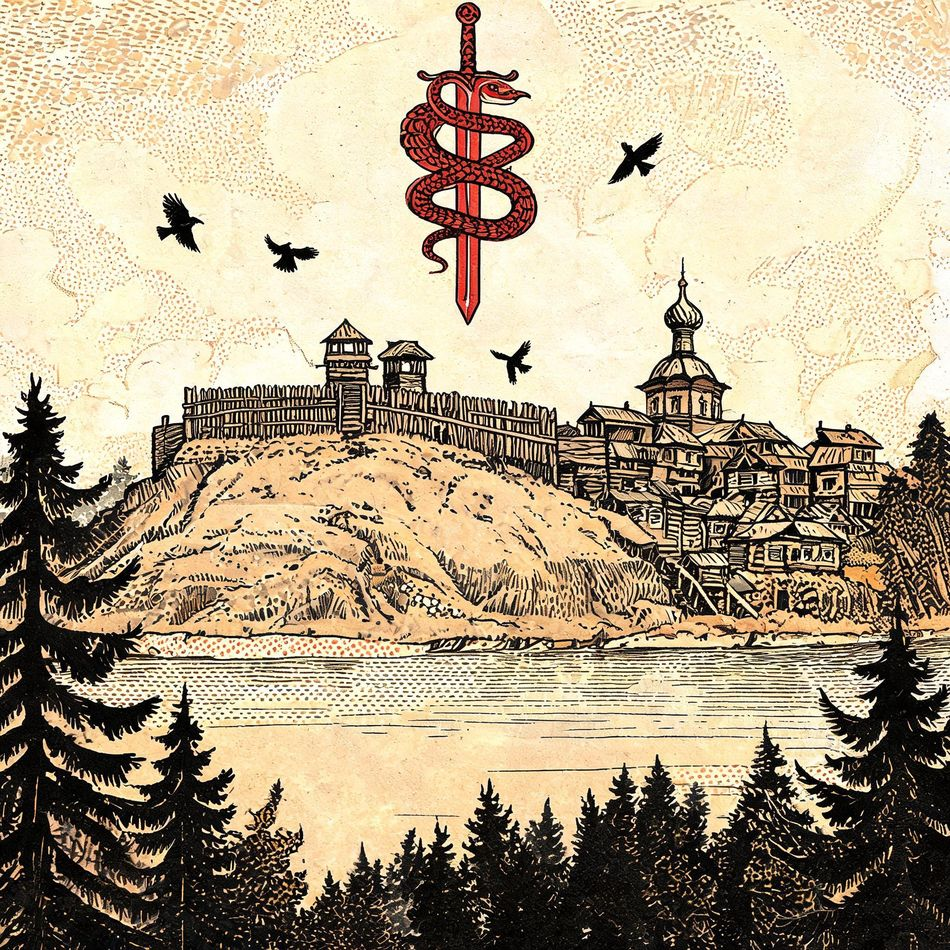

газета недвойственного жонглирования · один автор, шесть голосов
Выпуск №1 · сентябрь · девиз номера: «Код = мантра»
Тираж — сколько получится · цена — как договоримся · редакция — один автор и шесть голосов
Доктор Че открыл карманный канон для неофитов
Свод короткий: пять слотов, шесть голосов и один запрет. Запрет касается одного слова — и это, как уверяют в редакции, не опечатка. Правило звучит так: каширский шиваизм, не кашмирский. Ка-Ши-Ра складывается из имён Кали, Шивы и Рудры, а всякая автозамена в этом месте приравнивается к порче текста. Отдельно подчёркивается: вводить новые сущности в канон — не чаще одной на пять-семь публикаций, иначе мифология размывается.

Реальный якорь → мифологический концепт → уточнение → бытовая деталь → абсурдный поворот → серийный номер. Если выпадет последний — выйдет мифологический пост. Если выпадет деталь — бытовой. Если выпадут оба — сойдёт и так.
Текущий текст: 91 из 91. Дальше начинается молчание. Прибор упрямо показывает, что дальше некуда, — прибор мы не чиним.
404 — не ошибка, а священный код поиска себя. Перезагружать не нужно. Ка-Ши-Ра = Кали + Шива + Рудра. Автозамена этого слова — первый враг неофита.
| DOCTOR CHE | мантра-шансон, хард-рок про IT |
| ДОКТОР ШАНСОН | электричка и локальный быт |
| ЛЕНА ЛЕНОВНА | лирика |
| КЛАВА ШТЕПСЕЛЬ | джаз, кабаре, 18+ |
| ВЕРТИЦКИЙ | ретродекаданс |
| DJ 0xFF | tech house и миксы |
Сдаётся угол в Каширском. Соседи — бобёр, монокрабер и квадробобер: шумят по расписанию, расписание утеряно. Куплю невыполненный дедлайн. Дорого. Мутёнка, до востребования. Потеряно: главная роль. Нашедшего просят оставить себе.

Пока одни спорят о нейросетях, Рудра побратался с заводом и молча делает свою работу. В каноне это называется дата-шиваизмом: разрушение ради новой мандалы — деплой и жертвоприношения. Бит сборки рассчитан на тета-волны сервера сознания. Да, рассчитан. Ганеша устраняет препятствия, включая баги, но не берётся за сроки. Лучшее введение в эту линию — «Hard IT»: двенадцать треков о ежедневном ритуале. Читать перед первым созвоном.
«Вкусно и весело!» — джазовый пир, драники как мантры. «Hard IT» — код-рок, двенадцать треков. «Tales of Shiva» — легенды на английском. Далее: «Civil War» (Махно) и «Muerte».
Принял поток. Отгружаю в мастеринге. Ноты — в мантры, мантры — в пресейв. По-братски.
